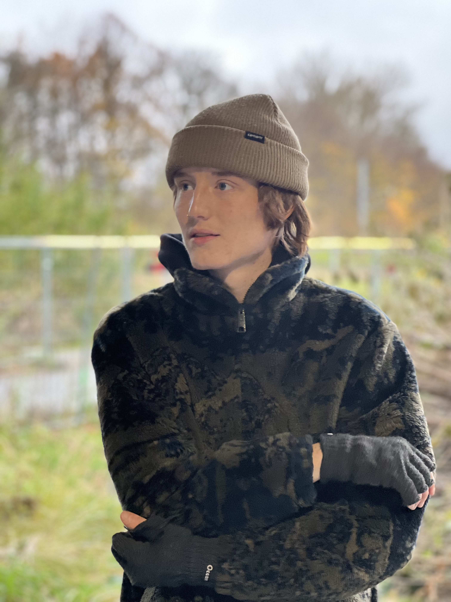

Passion

Nicklas
Nicklas helt store passion er skateboarding. Han taler i interviewet om hvad der fik ham til at skate og hvad der gør han stadig gør det den dag idag.
Nicklas helt store passion er skateboarding. Han taler i interviewet om hvad der fik ham til at skate og hvad der gør han stadig gør det den dag idag.